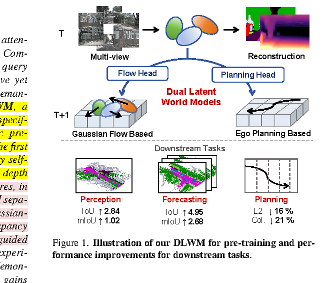
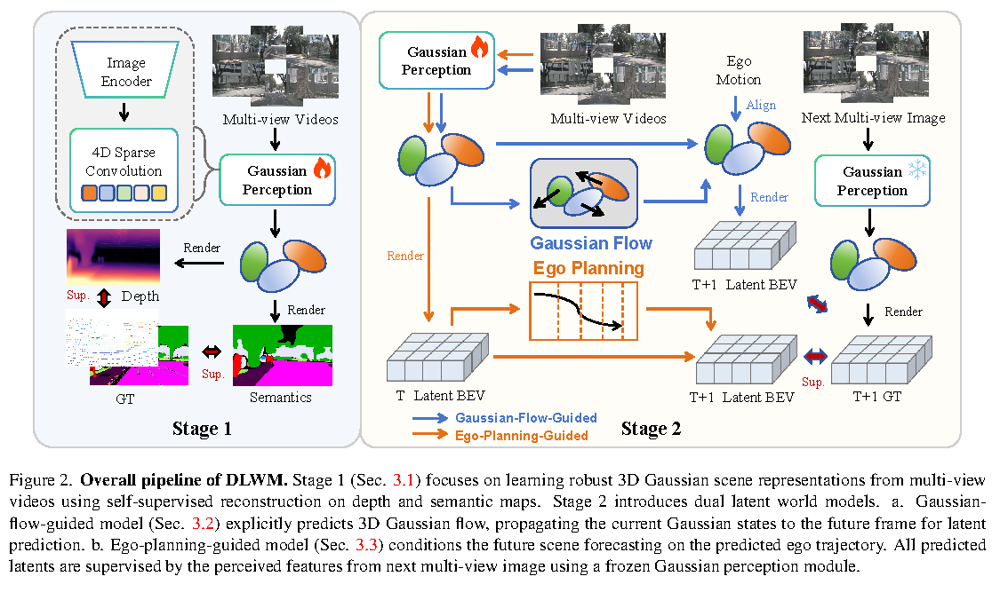
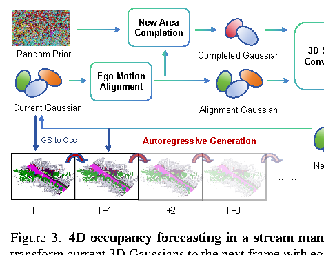

一句话总结
DLWM 的核心贡献是：为 Gaussian-centric 自动驾驶模型设计一个 holistic self-supervised pre-training 范式，用 Stage 1 学 3D Gaussian 几何语义，用 Stage 2 的 dual latent world models 学任务相关的时序表示。
论文要解决的问题
视觉自动驾驶中的 scene representation 需要同时满足表达力、效率和时序一致性。Voxel/BEV 表征比较直观， 但要么计算重，要么压扁高度信息；sparse query 方法更高效，但场景几何和语义不够完整。 3D Gaussian-centric representation 提供了一个折中：用稀疏 3D semantic Gaussians 表示场景，既保留 3D 结构，又避免 dense voxel 的高成本。
但问题是，Gaussian-centric 模型还缺少一个能覆盖 perception、forecasting、planning 的自监督预训练框架。 更麻烦的是，不同帧的 Gaussian queries 没有天然一一对应关系，直接监督 query feature 会受到 permutation equivalence 的影响。 DLWM 因此选择把 3D Gaussians rasterize 成 BEV latent，用它作为跨帧时序监督的中间表示。

创新点怎么理解
Holistic Gaussian-centric pre-training
不是只为 occupancy 或 planning 单任务预训练，而是把 3D Gaussian 表征作为统一底座， 再通过不同 latent world model 适配下游任务。
Rendering-based Stage 1
用 depth 和 semantic rendering 训练 Gaussian representation。监督来自 LiDAR depth、 Metric3D pseudo-depth 和 Grounded-SAM semantic pseudo labels，不依赖人工 3D occupancy 标注。
Gaussian-flow-guided latent world model
对每个 Gaussian 预测动态位移，再结合 ego motion 对齐到下一帧，学习 spatiotemporal Gaussian features， 主要提升 3D perception 和 4D forecasting。
Ego-planning-guided latent world model
用预测的 ego trajectory 调制 future scene latent，让未来场景预测和规划目标绑定， 主要服务 motion planning。
论文没有把所有任务硬塞进一个 world model，而是用 dual 设计解耦 Gaussian flow 和 ego planning。 附录消融显示 Dual 比 Unified 更好，这个点比单纯报 SOTA 更有学习价值。
方法总览

Multi-view videos
↓
Stage 1: Gaussian perception + rendering reconstruction
↓
Pre-trained Gaussian perception weights
↓
Stage 2-A: Gaussian-flow-guided latent prediction
→ perception / 4D forecasting
Stage 2-B: ego-planning-guided latent prediction
→ motion planningStage 1：Gaussian Representation Learning
Stage 1 的目标是让 Gaussian queries 学到可渲染的 3D 几何和语义。多视角图像经过 image encoder 和 FPN 后，
Gaussian perception module 输出一组 3D semantic Gaussians。每个 Gaussian 包含中心 μ、协方差
Σ、透明度 α 和 semantic logits 等属性。
训练时，模型把这些 Gaussians 渲染成 depth map 和 semantic map。深度监督来自两部分： LiDAR sparse depth 和 Metric3D pseudo dense depth；语义监督来自 Grounded-SAM 生成的 pseudo semantic labels。
L_rec = ω1 L_d + ω2 L_pd + ω3 L_sem
ω1 = 1.0, ω2 = 0.05, ω3 = 1.0这一步的本质是：不用人工 occupancy label，也能通过可微渲染逼迫 Gaussian 表征具备几何和语义可解释性。
Stage 2-A：Gaussian-flow-guided Latent World Model
这个分支服务 3D occupancy perception 和 4D occupancy forecasting。它预测每个 Gaussian 的 dynamic displacement
Δμ，再结合 ego motion，把当前帧 Gaussian 传播到下一帧：
μ_{t+1} = T_ego^{t→t+1}( μ_t + Δμ_t )
传播后的 3D Gaussians 会被 rasterize 到 BEV plane，得到预测的 future BEV latent
B̂_{t+1}。监督信号来自下一帧真实多视角图像经过 frozen Gaussian perception module 得到的 BEV latent
B_{t+1}：
L_bev = || B̂_{t+1} - B_{t+1} ||_2
Stage 2-B：Ego-planning-guided Latent World Model
另一个分支专门服务 motion planning。它先把当前 3D Gaussians rasterize 成 dense latent BEV feature， 再抽取 scene queries。Waypoint queries 通过 cross-attention 读取 scene queries，输出未来 ego trajectory。
随后，模型用预测轨迹 T̂ 通过 Motion-Aware Layer Normalization 调制 scene queries，
预测下一帧 future scene queries，并融合当前 BEV latent 得到 B̂_{t+1}。
L_reg = || T̂ - T ||_1
L_plan = L_reg + L_bev这个设计的动机是：规划真正关心的未来场景不是无条件未来，而是“自车按照某条轨迹走以后会遇到的未来”。 所以它用 ego trajectory 来 condition future latent prediction。
实验结论
mIoU 提升，20.83 → 21.85
IoU 提升，31.77 → 34.61
Avg mIoU 提升，15.09 → 17.77
Avg IoU 提升，25.65 → 30.60
Avg L2 下降，0.55m → 0.46m
主结果概览
| 任务 | Baseline | DLWM | 提升 |
|---|---|---|---|
| 3D occupancy perception | IoU 31.77 / mIoU 20.83 | IoU 34.61 / mIoU 21.85 | +2.84 IoU / +1.02 mIoU |
| 4D occupancy forecasting | Avg IoU 25.65 / Avg mIoU 15.09 | Avg IoU 30.60 / Avg mIoU 17.77 | +4.95 IoU / +2.68 mIoU |
| Motion planning | Avg L2 0.55m / Col. 0.24% | Avg L2 0.46m / Col. 0.19% | L2 约下降 16%，碰撞率下降 |
需要谨慎表述：论文在 SurroundOcc-nuScenes 和 nuScenes validation 上展示了强结果， 但不能泛化说“解决了所有 Gaussian-centric 预训练问题”。它的证据主要来自这三类下游任务。
消融实验怎么读
Stage 1 渲染监督 + Gaussian Flow
| 设置 | mIoU ↑ | IoU ↑ | 理解 |
|---|---|---|---|
| LiDAR sparse depth | 18.40 | 29.83 | 基础几何监督 |
| + dense pseudo-depth | 18.74 | 30.05 | 稠密几何信号有帮助 |
| + semantic supervision | 18.99 | 30.23 | 语义渲染进一步提升 |
| + Gaussian Flow latent WM | 19.30 | 30.56 | 时序 latent 预测继续增益 |
Ego Planning 分支
| 设置 | Avg L2 ↓ | Avg Col. ↓ | 理解 |
|---|---|---|---|
| Raw Gaussian features | 0.55 | 0.24 | 基础 planning baseline |
| + Latent BEV | 0.52 | 0.22 | BEV latent 比 raw sparse features 更适合规划 |
| + BEV Forecasting | 0.50 | 0.20 | 未来 latent 预测帮助 planning |
| + Stage-1 Pretrain | 0.46 | 0.19 | 几何语义初始化带来最大收益 |
Dual vs Unified
| 设计 | mIoU ↑ | L2 ↓ | Col. ↓ |
|---|---|---|---|
| Unified | 18.9 | 0.58 | 0.22 |
| Dual | 19.3 | 0.46 | 0.19 |
这个消融最能支持论文标题里的 “Dual”。作者认为 Gaussian flow 学习和 ego planning 学习目标不同， 强行统一会让 planning 分支承担没有显式监督的 flow 学习负担，反而增加复杂度。
局限与疑问
- 工程链条较长：依赖 Metric3D pseudo-depth、Grounded-SAM pseudo semantics、Gaussian perception、BEV rasterization 等多个组件。
- Dual 不是完全统一：论文叫 holistic，但两个 latent world model 是分开训练的，说明 perception/forecasting 与 planning 目标仍然不容易统一。
- BEV latent 是折中：作者强调 BEV rasterization 只用于 temporal supervision，不是最终 3D 表征；但这仍引入了 BEV 中间表示的设计选择。
- 未来帧数有限：附录里 N=1 最好，更多未来帧反而下降，说明长时 future prediction 仍然困难。
- 复现成本不低：25,600 Gaussians、两阶段预训练、20 epoch fine-tuning，对普通组来说不是轻量级实验。
组会怎么短讲
如果只有 3-5 分钟，不建议从 3DGS 公式讲起。建议按“问题-方法-证据-评价”讲：
- 问题：Gaussian-centric 表征高效且保留 3D 几何，但缺少服务 perception/forecasting/planning 的完整自监督预训练。
- 核心方法：Stage 1 用 depth/semantic rendering 学 Gaussian；Stage 2 用两个 latent world models 分别学习 Gaussian flow 和 ego-planning-conditioned future latent。
- 关键证据：3D perception +1.02 mIoU，4D forecasting +2.68 mIoU，planning L2 从 0.55m 降到 0.46m。
- 个人理解：最重要的不是 SOTA，而是 Dual 解耦。不同下游任务需要不同 temporal representation，统一 world model 未必更好。
- 局限：pipeline 复杂、依赖 pseudo labels、更多未来帧预测下降，长时建模仍有挑战。
DLWM 给 Gaussian-centric 自动驾驶模型做了一个两阶段自监督预训练：先通过 depth/semantic rendering 学 3D Gaussian 几何语义， 再用 dual latent world models 分别面向 perception/forecasting 和 planning 学时序 latent。 实验上三类任务都提升，最值得注意的是 Dual 比 Unified 更好，说明 Gaussian flow 和 ego planning 的学习目标不宜强行合并。